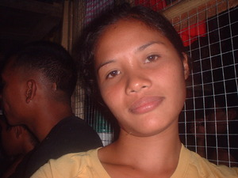

dingil 
/diŋil/
v_rt.
v.
for someone (egdingil, agent, eg><ø-) to move one's head to the side (egdingilen, patient, eg><en-)
Ka seini iyan sika se egpakaranirani ka ulu ta te pamanayen ta minsan diyè te gibang wey diyè te kawanan naa.
Egdingil dè iya si Lisa ke egsuhuen.
Lisa head to side when somebody is command her.
Eng. head to side
Online dict status: -
Usage level: B
v.
for someone (egpakaringil, agent, egpAkA-) to bow one's head
Egpakaringil dè si Mariyù ne egkabehatan te senge saku ne paley ne intiang din.
Mario bow head side that weighty carrying one sack of rice.
Eng. bow head
Online dict status: -
Usage level: M
adj.
(karingil, kA-) slanting
Eng. slanting
Online dict status: -
Usage level: M
Updated by: RJH,AAA,QDL
Last updated: 15/Oct/2009
This page last updated: 19/May/2012
Copyright © 2009-2010, Matigsalug Language Christian Association, Inc